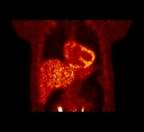
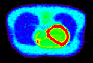
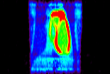
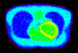
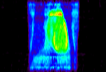

Contact: Carole Lartizien.
A whole-body PET acquisition was simulated using SORTEO. The anatomical and activity distribution models were constructed from the XCAT phantom which was fitted to a specific patient anatomy. In addition to the main organs, XCAT includes the vessels and the airway tree which are necessary for high resolution simulations such as CT. The PET acquisition protocol consisted of a static 224s acquisition and was described here. The scanner geometry was that of the PET/CT Philips GEMINI system (Philips Healthcare, Cleveland, OH). The 18F-FDG activity distribution was obtained from here. Three bed fields were used to cover thorax and abdomen. Each bed field had the dimension of the axial field of view (FoV) of the scanner, i.e, 47 cm. The overlap between beds was set to 50% of the axial FoV to compensate for the sensitivity loss on both extremities of the axial FoV. List-mode data were reconstructed with one-pass list-mode EM using 5 iterations and 8 subsets, resulting in 128x128x81 images of 4 mm isotropic voxels.
|  |
Contact: Patrick Clarysse, Frédéric Cervenansky..
Total CPU time: 91 hours. Best execution time in VIP: 39 hours.
Two FDG-PET acquisitions (a healthy one and a patho- logical one) were simulated with ADAM using SORTEO. The scanner geometry of the ECAT EXACT HR+ (CTI/Siemens Knoxville) was used, and 18F-FDG was the radiotracer to study glucose metabolism during one cardiac Two FDG-PET acquisitions (a healthy one and a patho- logical one) were also simulated with ADAM using SOR- TEO. The scanner geometry of the ECAT EXACT HR+ (CTI/Siemens Knoxville) was used, and 18F-FDG was the radiotracer to study glucose metabolism during one cardiac Two FDG-PET acquisitions (a healthy one and a patho- logical one) were also simulated with ADAM using SOR- TEO. The scanner geometry of the ECAT EXACT HR+ (CTI/Siemens Knoxville) was used, and 18F-FDG was the radiotracer to study glucose metabolism during one cardiac cycle. The simulated activities were respectively 45.1 MBq for the healthy case and 43.8 MBq for the pathological case as used here. The raw data was corrected from attenuation and reconstructed using a standard 3D filtered backprojection algorithm resulting in a 128x128x63 3D image with a voxel size of 5.15x5.15x2.42 mm. The appearance is close to a real cardiac FDG-PET image with high homogeneous FDG capture in the healthy myocardium and lower fixations for the pathological case.
|  |  |
|  |  |